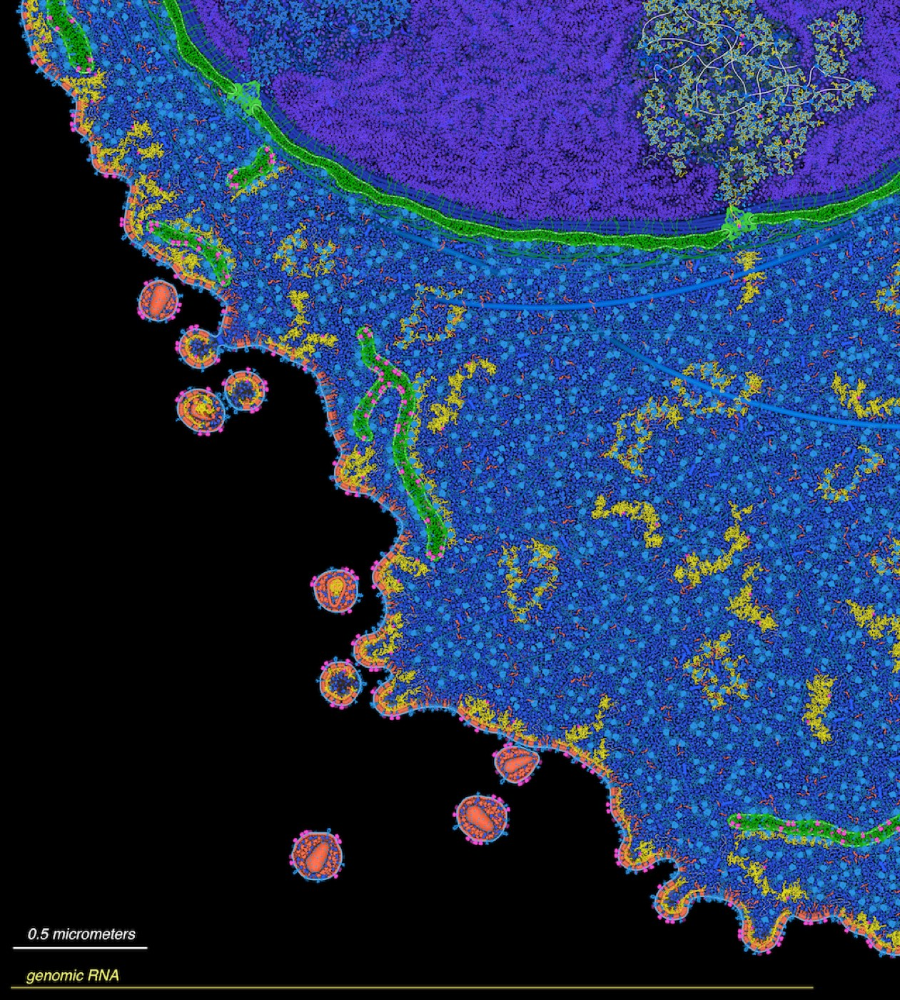
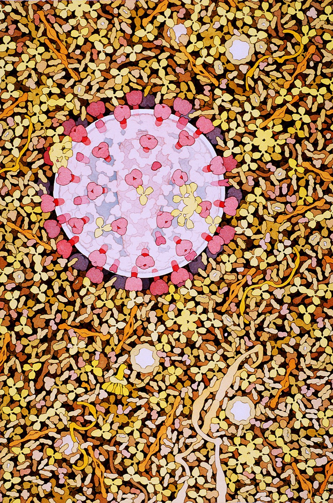
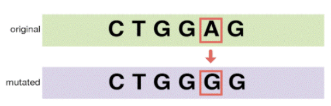
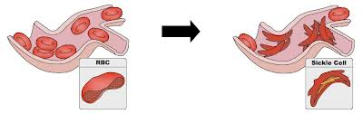
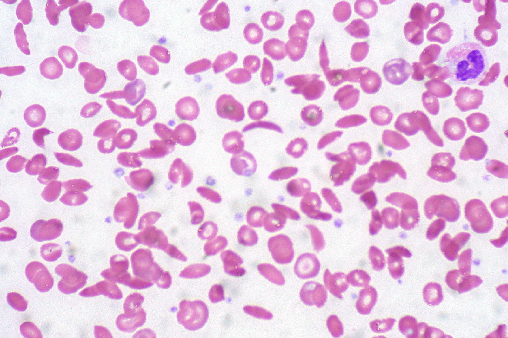
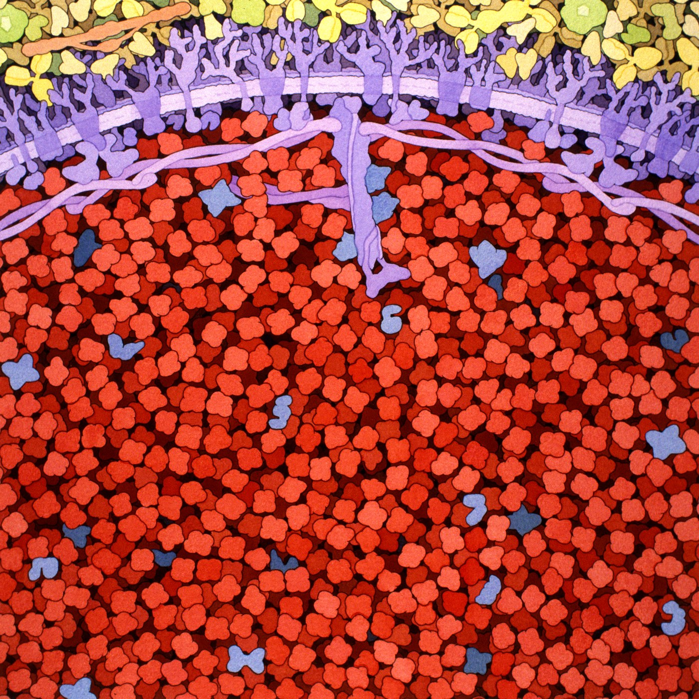
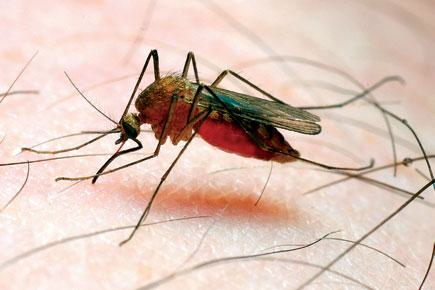

5.3 Mutations and Cystic Fibrosis
You can now read a gene into a protein. This chapter breaks one — deliberately, six different ways — and then follows a single real broken gene all the way out to a person. It is the chapter where the molecule finally becomes a life.
What a mutation actually is
A mutation is a change in a DNA sequence. That is the entire definition. It is not a synonym for disease, damage or superpower.
Mutations arise in three ways, and your standard names all three:
- Errors during replication. DNA polymerase is astonishingly accurate but not perfect — around one uncorrected error per billion bases. Multiply that by three billion bases per division and errors are a certainty, not an accident.
- Environmental damage. UV light, tobacco smoke and some chemicals damage bases directly. These are called mutagens.
- New combinations through meiosis. Not a change to any sequence, but a reshuffling of which alleles end up together. This is the largest source of variation between siblings, and you will meet it properly in 5.4.
Only mutations in gametes — egg and sperm cells — can be inherited. A mutation in a skin cell caused by sunburn affects that cell and its descendants, and stops when you do. This distinction is the difference between cancer and a genetic condition.
A fourth route: when a virus writes into your DNA
At the end of 5.2 you were promised a footnote, and here it is — because it is the one exception to the central dogma that you are expected to be able to explain.
The arrows in Figure 5.5 run one way: DNA → RNA → protein. Your cells have no machinery for running the first arrow backwards. A handful of viruses do, and they are called retroviruses. HIV is the one you will be asked about.
HIV does not store its genes as DNA at all. It stores them as RNA, and it carries its own enzyme — reverse transcriptase — which does exactly what the name says: transcription in reverse, building DNA from an RNA template.
- HIV infects a white blood cell and releases its RNA inside.
- Reverse transcriptase copies that RNA into DNA. RNA → DNA — the arrow running backwards.
- A second viral enzyme cuts open one of the cell's own chromosomes and inserts the new DNA into it.
- From that moment, the viral genes are part of the cell's DNA. The cell transcribes and translates them with its own ribosomes, building new virus particles, because it has no way of telling them apart from its own genes.
Watch it happen. Janet Iwasa's animation, made at the University of Utah from current research on the virus, follows HIV into a white blood cell, through reverse transcription and into the cell's own DNA, and out again as new viruses.
Two things follow, and they are the reason this matters rather than being a curiosity.
This is a genuine, permanent change to a cell's DNA, caused by something from outside. That is precisely what your standard means when it lists mutations caused by environmental factors — a virus is about as environmental a factor as there is.
And it is why HIV is so hard to cure. Modern drugs can stop the virus copying itself so effectively that a treated person stays healthy and cannot pass it on. But the instructions are now written into the DNA of that person's own cells, and there is no simple way to find every one of those cells and cut the sequence back out. Treating the infection and removing it are two very different problems.


One limit, and it comes straight from the rule at the top of this chapter: HIV infects immune cells — body cells. Those changes are not in eggs or sperm, so they are not inherited. A child does not inherit HIV in their DNA the way they inherit a CF allele.
The types, and why they differ so much
Mutations are grouped by what they do to the reading of the message, not by how big they look. Two categories matter most:
| Type | What changes in the DNA | Effect on the protein |
|---|---|---|
| Silent substitution | One base swapped | None. The new codon still codes for the same amino acid |
| Missense substitution | One base swapped | One amino acid changes. May matter enormously or not at all |
| Nonsense substitution | One base swapped | A codon becomes a stop. The protein is cut short |
| Frameshift — insertion or deletion | One base added or removed | Every codon after that point is misread. Usually catastrophic |
| Inversion | A block reversed in place | Several amino acids change; the reading frame survives |
The important comparison is the last two rows against the first three. A substitution changes at most one amino acid. An insertion or deletion changes every amino acid downstream, because the ribosome keeps reading in threes from wherever it happens to be. The same one-base edit; wildly different consequences.
A sentence makes this obvious. Take THE FAT CAT ATE THE RAT and delete the first F: THE ATC ATA TET HER AT. Nothing after the deletion survives. Now swap the F for an H instead: THE HAT CAT ATE THE RAT. One word changed, and the sentence still reads.
Break it yourself
These are the six mutation tasks from your anchor guide, run on the same mRNA sequence. Each time, the protein is rebuilt from the real genetic code — so what you see is what that change genuinely does.
Break a gene: six mutations, six outcomes
Interactive- Tasks 1, 2 and 3 are all single-base substitutions. Why do they produce such different proteins? Your answer must mention the codon table.
- Compare the base count in tasks 4 and 6 with the original. What do insertions and deletions have in common that substitutions do not?
- Task 5 changes several amino acids but the protein still ends in the right place. Explain why, using the idea of a reading frame.
- Which single task would you expect to be most damaging to a real protein? Defend your choice — and say what extra information you would need to be sure.
One base: sickle cell anaemia
Task 1 was not invented. In the gene for haemoglobin — the protein that carries oxygen in your red blood cells — a single base change turns the codon GAG into GUG. Glutamic acid becomes valine. One amino acid out of 146.

That one substitution changes the shape of the haemoglobin molecule just enough that, at low oxygen, the molecules stack into stiff rods. The rods deform the red blood cell into a crescent — a sickle. Sickled cells are rigid, so they jam in narrow capillaries, causing pain and organ damage, and they are destroyed faster than the body can replace them, causing anaemia.



Here is the part that breaks the "mutations are bad" habit. Carrying one sickle allele gives significant protection against malaria, because the parasite fares badly in cells that sickle. In regions where malaria is common the allele is therefore held at high frequency by natural selection, despite the cost to people who inherit two copies.
The allele is not good or bad. It is good in one environment and bad in another — which is exactly the argument you will meet again in Unit 6.

Cystic fibrosis, from the gene outwards
Now the case study that runs through this whole unit. The affected gene is CFTR, on chromosome 7. It codes for a protein that sits in the cell membrane and moves chloride ions out of the cell.
Chloride drags water with it by osmosis. That water is what keeps the mucus lining your airways and gut thin enough to be swept along. With little or no working CFTR:
- Chloride stays inside the cell, so water stays inside too.
- The mucus outside becomes thick and sticky instead of thin and mobile.
- Thick mucus blocks airways and traps bacteria, causing repeated lung infections.
- It blocks the pancreatic duct, so digestive enzymes cannot reach the gut and food is poorly absorbed.
- Sweat is unusually salty — which is the basis of the standard diagnostic test.
Look back at Figure 5.1 in the unit overview with this in mind. You should now be able to explain every panel of it, left to right, rather than just reading the labels.
Notice what the explanation did not require: nothing about lungs is written in the gene. The gene specifies a chloride channel. Everything else — the mucus, the infections, the salty sweat — follows from that one protein failing to do one job, in the tissues that happen to need it most.
Why two people with CF are not equally ill
More than 1,700 different mutations of the CFTR gene are known. They are not all equivalent — some destroy the protein completely, others leave a partly working channel. That is why cystic fibrosis is not one uniform condition.
![A bar chart titled Allele Combinations Affect CFTR Protein Function. The vertical axis is sweat chloride in milliequivalents per litre, from 0 to 125. Six bars show allele pairs along the bottom: CF severe with CF severe is highest, then CF severe with CF mild, then CF mild with CF mild, each with a range indicated. The last three — CF severe with healthy, CF mild with healthy, and healthy with healthy — are low. Bands on the right label the chart from low CFTR activity at the top through some CFTR activity to high CFTR activity at the bottom.](../images/u5/image99.png)
Two things are worth pulling out of that chart:
- One working copy is enough. Every combination that includes a healthy allele sits down in the high-activity band. This is what "recessive" means in molecular terms — one good gene makes enough protein to cope.
- Severity is a spectrum, not a switch. Two mild alleles leave more function than two severe ones. And the bars have ranges, which means the alleles alone do not fully determine the outcome — other genes and the environment contribute too.
How two healthy parents have a child with CF
Cystic fibrosis is autosomal recessive. Autosomal means the gene is not on a sex chromosome. Recessive means you need two non-working copies to be affected.
Someone with one working and one non-working copy is a carrier. Carriers are healthy — one working copy makes enough CFTR — and around 1 in 25 people of European ancestry carries a CF allele without knowing.
If both parents are carriers, each child gets one allele from each parent at random:
| Father gives C | Father gives c | |
|---|---|---|
| Mother gives C | CC — unaffected | Cc — carrier |
| Mother gives c | Cc — carrier | cc — has cystic fibrosis |
One box in four. So each child of two carriers has a 1 in 4 chance of having cystic fibrosis, a 2 in 4 chance of being a carrier, and a 1 in 4 chance of carrying neither allele. Neither parent is ill, and neither did anything wrong.
That 1 in 4 is a probability for each child, independently — not a quota. Two carrier parents can have four children with cystic fibrosis, or none. A coin that has landed heads three times is still a fair coin. You will formalise this in 5.4.
Where this goes next
Something changed in the last few paragraphs and it is worth noticing. Up to here, this unit has been about one gene inside one cell — its sequence, the protein it builds, what happens when a letter is wrong. Then, to explain how two healthy parents have a child with cystic fibrosis, we suddenly started drawing a family.
That grid you just used has a name — a Punnett square — and you took it on trust. Chapter 5.4 goes back and builds it properly, starting from a monk counting pea plants in the 1860s, and shows why it is entitled to work at all. The answer turns out to be meiosis, which you already know.
From here to the end of the unit the question changes. It stops being "what does this gene do?" and becomes "where does this gene go, and what are the odds?"
Check your understanding
- A single base is deleted from the middle of a gene. A different gene has a single base substituted in the middle. Which is more likely to destroy the protein, and why?
- Explain how a change to one amino acid — out of 146 — can block a capillary. Give every step of the chain.
- The sickle allele is harmful when inherited twice but protective when inherited once. Explain why natural selection has not removed it from human populations.
- A newborn has unusually salty sweat. Explain, starting from the CFTR gene, why that is a useful test for cystic fibrosis.
- Two parents who both carry a CF allele already have one child with cystic fibrosis. What is the probability that their next child will have it? Justify your answer.
- Using Figure 5.14: why does someone with one severe allele and one healthy allele have high CFTR activity, while someone with two mild alleles has less?
Quick check
This part marks itself, and points you back to the right section if something is shaky.
A man develops a mutation in a skin cell after severe sunburn. Can his children inherit it?
This one distinction separates two very different things. A mutation in a body cell affects that cell and its descendants and stops when you do — that is the road to cancer. A mutation in a gamete is the road to a genetic condition in the next generation.
A copying error during replication leaves a mutation in one of a woman's egg cells. Can a child inherit it?
The test is never the cause and never the severity — it is the address. Egg and sperm cells build the next person, so a change already sitting in one of them travels; a change anywhere else stops with the body that holds it.
Modern drugs can stop HIV copying itself so well that a treated person stays healthy. Why is that still not a cure?
Reverse transcriptase runs the first arrow of the central dogma backwards, building DNA from the viral RNA, and a second enzyme splices that DNA into a chromosome. From then on the cell reads those genes as its own. Treating the infection and removing it are two very different problems.
HIV infection is the exception to the central dogma you are expected to explain. Which step is the one that runs an arrow backwards?
Your own cells have no machinery for running DNA → RNA in reverse. A retrovirus brings the enzyme with it, which is the whole reason the exception exists — the capability is the virus's, not yours.
One gene loses a single base. Another gene has a single base swapped. Which change is likely to do more damage?
Take THE FAT CAT ATE THE RAT and delete the F: THE ATC ATA TET HER AT. Nothing after the deletion survives, because the ribosome keeps reading in threes from wherever it happens to be. Swap the F for an H instead and you get THE HAT CAT ATE THE RAT — one word changed, sentence intact.
A block of bases in the middle of a gene is reversed in place. Several amino acids change, yet the protein still ends where it should. Why?
Group mutations by what they do to the reading of the message rather than by how much sequence they disturb. An inversion can rewrite a run of amino acids and still be survivable, while removing one single base — a far smaller edit — usually is not.
Why has natural selection not removed the sickle cell allele from populations where malaria is common?
This is the case that breaks the “mutations are bad” habit. The allele is not good or bad in itself — it is good in one environment and bad in another. Move the same allele to a region with no malaria and selection works against it, which is exactly the argument you will meet again in Unit 6.
A population that carries the sickle allele at high frequency settles in a region where malaria does not occur. What would you expect to happen to the allele over many generations?
Carry the reasoning in both directions and it stops being a fact about one allele and becomes a rule. An allele's fate is set by the environment it finds itself in, so the same sequence can be held at high frequency in one place and pushed down in another.
CFTR codes for a chloride channel. How does a fault in it lead to repeated lung infections?
Follow the chain and notice how little it needs: one protein fails at one job, and the mucus, the infections, the blocked pancreatic duct and the salty sweat all follow — in whichever tissues happen to depend on that pump most.
A child with cystic fibrosis absorbs food poorly and struggles to gain weight. How does a fault in a chloride channel produce that?
The same fault surfaces differently in every tissue that leans on the pump, so the symptom list looks scattered until you trace each branch back. Lungs, pancreas and sweat glands are three outcomes of one failure, not three separate problems.
In Figure 5.14, every allele combination that includes a healthy allele sits in the high-activity band. What does that tell you?
Reading up that chart is reading down the amount of working protein. Two severe alleles leave almost none; two mild alleles leave some; one healthy allele is plenty. That is why carriers are perfectly healthy without knowing anything about their genotype.
In Figure 5.14 the CF combinations are drawn as a range of sweat chloride values rather than a single value. What does that range tell you?
A genotype sets the range a person can fall in rather than the point they land on. That is why two people with identical CFTR alleles can be unequally ill, and why the chart is drawn with bands instead of dots.
Two carrier parents already have one child with cystic fibrosis. What is the chance that their next child has it?
A 1-in-4 chance is a probability for each child, independently. Two carrier parents can have four children with cystic fibrosis, or none at all. A coin that has landed heads three times is still a fair coin — and you will formalise exactly this in 5.4.
Both parents carry a CF allele. What is the chance that a child of theirs is a carrier?
The square has four boxes, and carrier fills two of them because the faulty allele can arrive from either parent. That doubling is why carriers are so much more common than affected people — around 1 in 25 people of European ancestry, none of whom have any reason to know.